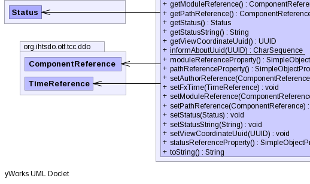
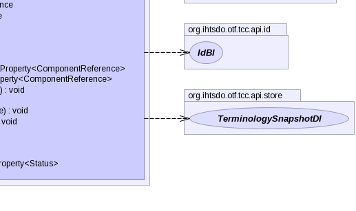

- java.lang.Object
-
- org.ihtsdo.otf.tcc.ddo.concept.component.VersionDdo
-
- All Implemented Interfaces:
- Serializable
- Direct Known Subclasses:
- ComponentVersionDdo, IdentifierDdo
public abstract class VersionDdo extends Object implements Serializable
- See Also:
- Serialized Form
-

 
-
-
Property Summary
Properties Type Property and Description javafx.beans.property.SimpleObjectProperty<ComponentReference>authorReferencejavafx.beans.property.SimpleObjectProperty<TimeReference>fxTimejavafx.beans.property.SimpleObjectProperty<ComponentReference>moduleReferencejavafx.beans.property.SimpleObjectProperty<ComponentReference>pathReferencejavafx.beans.property.SimpleObjectProperty<Status>statusReference
-
Field Summary
Fields Modifier and Type Field and Description static UUIDunspecifiedUserUuid
-
Constructor Summary
Constructors Constructor and Description VersionDdo()VersionDdo(TerminologySnapshotDI ss, ComponentVersionBI another)VersionDdo(TerminologySnapshotDI ss, IdBI id)
-
Method Summary
-
-
-
Field Detail
-
unspecifiedUserUuid
public static UUID unspecifiedUserUuid
-
-
Constructor Detail
-
VersionDdo
public VersionDdo()
-
VersionDdo
public VersionDdo(TerminologySnapshotDI ss, ComponentVersionBI another) throws IOException, ContradictionException
- Throws:
IOExceptionContradictionException
-
VersionDdo
public VersionDdo(TerminologySnapshotDI ss, IdBI id) throws IOException, ContradictionException
- Throws:
IOExceptionContradictionException
-
-
Method Detail
-
authorReferenceProperty
public javafx.beans.property.SimpleObjectProperty<ComponentReference> authorReferenceProperty()
-
fxTimeProperty
public javafx.beans.property.SimpleObjectProperty<TimeReference> fxTimeProperty()
-
informAboutUuid
public static CharSequence informAboutUuid(UUID uuid)
-
moduleReferenceProperty
public javafx.beans.property.SimpleObjectProperty<ComponentReference> moduleReferenceProperty()
-
pathReferenceProperty
public javafx.beans.property.SimpleObjectProperty<ComponentReference> pathReferenceProperty()
-
statusReferenceProperty
public javafx.beans.property.SimpleObjectProperty<Status> statusReferenceProperty()
-
toString
public String toString()
Returns a string representation of the object.
-
getAuthorReference
public ComponentReference getAuthorReference()
-
getFxTime
public TimeReference getFxTime()
-
getModuleReference
public ComponentReference getModuleReference()
-
getPathReference
public ComponentReference getPathReference()
-
getStatus
public Status getStatus()
-
getStatusString
public String getStatusString()
-
getViewCoordinateUuid
public UUID getViewCoordinateUuid()
-
setAuthorReference
public void setAuthorReference(ComponentReference authorReference)
-
setFxTime
public void setFxTime(TimeReference fxTime)
-
setModuleReference
public void setModuleReference(ComponentReference moduleReference)
-
setPathReference
public void setPathReference(ComponentReference pathReference)
-
setStatus
public void setStatus(Status status)
-
setStatusString
public void setStatusString(String status)
-
setViewCoordinateUuid
public void setViewCoordinateUuid(UUID viewCoordinateUuid)
-
-